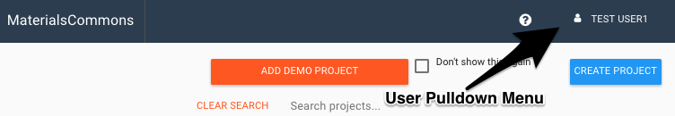

We assume that the reader has used (or is otherwise familiar with) the Materials Commons web site (https://materialscommons.org/). This site provides a User Interface to the Materials Commons server. Note: These instructions assume that you are using this cental Materials Commons web site. If this is not the case, your instance of Materials Commons will have a different URL and corrections in the instructions will have to be made, accordingly.
In this document, we describe the Python API to the Materials Commons. It is a Python module embodying the API (Application Programmer Interface) that to the Materials Commons server. It supports creating, modifying, and deleting Materials Commons Projects and their parts: Experiments, Processes, Samples, Directories, and Files. These "objects of discourse" are depicted in this object-relation sketch.

The object with the white backgrounds (Project, Experiment, Process, File, Directory, and Dataset) are the main objects that one uses to create a project in Materials Commons and the Python API lets a user create and manipulate each of these object type, except for Dataset. Since Dataset's are used as the means of publishing data on the public data site for Materials Commons, we felt it best that the web site should be used for that final publication.
In the diagram above the lines between the objects a
relationship, but do not specify the nature of that relationship.
In this document, those relations can be thought of as "contains"
in the following way:
These objects are described in the details sections of this documentation.
All API access is through function or method calls in the API
(see the API Details section below). The API requires a
configuration with a base url and an apikey.
The configuration is set up using the file ~/.materialscommons/config.json
(where ~ denoted the user's home directory) .
The URL for the API support by the production version of the
Materials Commons is: materialscommons.org/api. To
access test site, the corresponding url would be test.materialscommons.org/api
.
For example, suppose the apikey for a given user is
"12345678901234567890". Then that users might have a file ~/.materialscommons/config.json
which contained the following json:
{
"apikey": "12345678901234567890",
"mcurl": "http://mctest.localhost/api"
}
As a user of the API, you can determine your API key in this way. Log into the MaterialsCommons web site, and on the home page, you will see your user name in the upper right hand corner - this is the link to the user-pull-down menu.

Select the menu (click on the link), select "Account Settings" in the menu, and select "show API key" on the resulting page. This will display your API Key. Be careful with this value: possesing it is equivlent to having your username and password.
If you do not have a Materials Commons account, go to the web site and register.
Most of the calls to the API are based on the contains relationship described above. The are "methods" of an object; that is, they are functions that are called using the object that they pertain to. Except in the case of a few "top level function", you first have to obtain the object. For example to make an API call to create a process from a template, you first have to obtain an Experiment: Process objects are "contained" in an Experiment. Then, to create the Experiment, you would first have to obtain a Project object. Since the project object is a top level object, there is a function (not part of any object), to create a project. So the sequence of calls might look like this:
projectName = "Project One"
projectDescription = "This is my first Project"
experimentName = "Experiment One"
experimentDescription = "This is my first Experiment"
myProject = create_project("Project One","This is my first
Project)